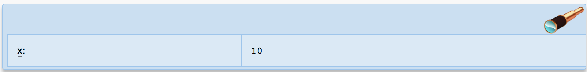

2.7 Spies
Spies are used for convenient display of values for print-style debugging. See Rationale for why this is particularly useful in Pyret.
2.7.1 Examples
The shortest use of a spy statement is to print the value of a name:
x = 10 spy: x end
This will produce a message like:
The filename will be the name of the file containing the spy statement, not spies.arr as shown here
Spying (at file:///spies.arr:2:0-2:10) |
x: 10 |
On code.pyret.org, you’ll see output like:

Both of these outputs indicate that the name was x and the value was 10. In the text output, the line and column information is printed (this happened at line 2). In the visual output, the x is underlined – clicking it will scroll the editor to the line of the spy statement and highlight the corresponding use of x.
A spy statement can contain more than one name, and will print out all their values:
x = 10 y = [list: 1, 2, 3] spy: x, y end
Spying (at file:///spies.arr:3:0-3:13) |
x: 10 |
y: [list: 1, 2, 3] |
A spy statement can also contain a message. This can be helpful for distinguishing between spy statements without looking at their corresponding line numbers:
fun square(x): spy "in square": x end x * x end fun cube(x): spy "in cube": x end x * x * x end square(x) cube(x) square(x)
Will produce:
Spying "in square" (at file:///spies.arr:2:2-2:24) |
x: 3 |
Spying "in cube" (at file:///spies.arr:7:2-7:22) |
x: 2 |
Spying "in square" (at file:///spies.arr:2:2-2:24) |
x: 2 |
If we want to spy on an expression, rather than just names, we can give the expression a name within the spy statement:
fun reverse(lst, sofar): spy "lengths": lst-length: lst.length(), sofar-length: sofar.length(), sum: lst.length() + sofar.length() end cases(List<A>) lst: | empty => sofar | link(first, rest) => reverse(rest, link(first, sofar)) end end check: reverse([list: "a", "b", "c"], empty) is [list: "c", "b", "a"] end
This produces:
Spying "lengths" (at file:///spies.arr:2:2-6:5) |
lst-length: 3 |
sofar-length: 0 |
sum: 3 |
Spying "lengths" (at file://spies.arr:2:2-6:5) |
lst-length: 2 |
sofar-length: 1 |
sum: 3 |
Spying "lengths" (at file:///spies.arr:2:2-6:5) |
lst-length: 1 |
sofar-length: 2 |
sum: 3 |
Spying "lengths" (at file:///spies.arr:2:2-6:5) |
lst-length: 0 |
sofar-length: 3 |
sum: 3 |
2.7.2 Minor Notes and Corner Cases
Both types of spy fields can be used in a single spy statement:
x = 10 spy: x, y: 20 end
Each value that is spied upon is required to have a name. That is, it’s an error to write:
spy: 2 + 2 end
The message position can contain expressions, not just string constants, so the message can be computed:
fun f(n): n * n end for each(i from range(0, 10)): result = f(i) spy "iteration " + to-string(i): result end result end
2.7.3 Grammar
The grammar of spy statements is:
‹spy-stmt› spy ‹expr› : ‹spy-body› end ‹spy-body› ‹spy-field› , ‹spy-field› ‹spy-field› NAMENAME : ‹binop-expr›
2.7.4 Rationale
Often, when debugging or explaining a program, it’s useful to display values during execution. It’s common to do this with functions like print. However, both in general, and specifically in Pyret, using a regular function call for debug printing leaves something to be desired. For example, just printing doesn’t track the line and column something was printed at, and when the value of an identifier is printed, its name is lost in the output, forcing the programmer to add extra string output describing the value. More annoyingly in Pyret, since we often add print statements to already-existing code, it becomes a nuisance to add Block Shorthand just to get a debugging print.
For example, consider the reverse example from above:
fun reverse(lst, sofar): cases(List<A>) lst: | empty => sofar | link(first, rest) => reverse(rest, link(first, sofar)) end end
We might try to add uses of print to do what the spy statement did:
fun reverse(lst, sofar): print(lst.length()) print(sofar.length()) print(lst.length() + sofar.length()) cases(List<A>) lst: | empty => sofar | link(first, rest) => reverse(rest, link(first, sofar)) end end
This has a few problems. First, because Pyret restricts function bodies to have no more than one expression unless Block Shorthand is used, this is an immediate syntax error. We could change the first line to include block: to let Pyret know we want to allow multiple statements.
fun reverse(lst, sofar) block:
Second, the uses of print lack context. With this version, we’d simply see sequences of numbers print out, and it would be difficult to discern which came from which print statement, or what the values meant. We could add more string information into the output to label the outputs, which leads to clunky string concatenation expressions like
print("lst-length: " + to-string(lst.length()))
This ends up being onerous and error prone.
Finally, for rich values like tables and images, the string representation produced by print isn’t as useful as the rich rendering that Pyret provides in an interface like code.pyret.org.
The spy statement is designed to make it natural and useful to add printed observations to the program, supporting and enhancing the practice of “printf-debugging”.